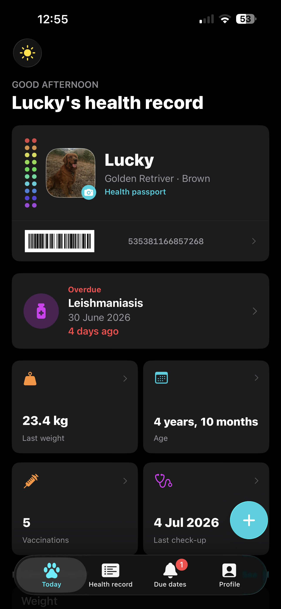
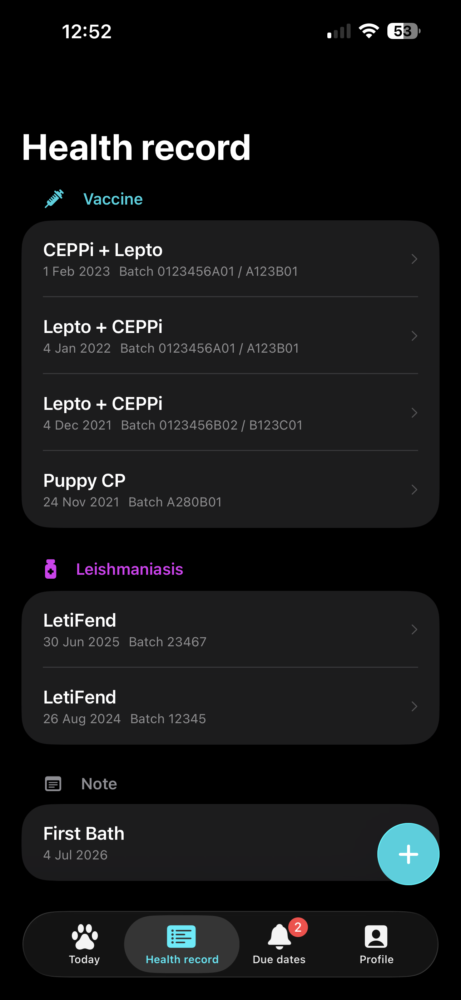
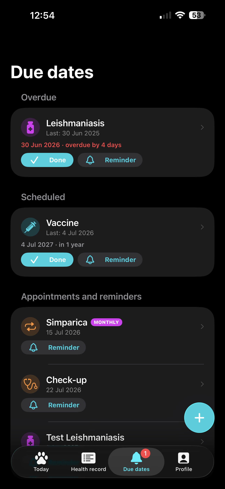
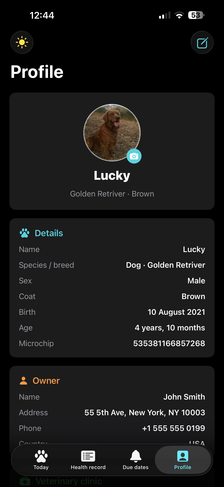

Vaccines, treatments, check-ups and reminders: everything about your pet's health, in your pocket and up to date.

PetDì keeps every vaccine, treatment and check-up in one tidy place and nudges you before anything expires. No more digging through drawers or guessing when the next shot is due.
The small things that keep an animal healthy, finally easy to track and impossible to forget.
Vaccines, boosters, antiparasitics, deworming and check-ups: each with dates, batch numbers and notes.
Automatic alerts before every due date, so a vaccine or treatment never slips your mind again.
Your pet's microchip as a QR and barcode, ready to show the vet or shelter in a single tap.
Log weight, temperature and blood pressure at each visit, and watch the history build over time.
Save vet and clinic contacts with one-tap call and map, plus reference values for dogs and cats.
Everything stays on your iPhone. No account, no tracking, no servers. Your pet's record is yours alone.
Designed to feel right at home on iOS: in light and dark, and in seven languages.



PetDì collects no data, requires no sign-up and talks to no server. Read exactly how your information is handled and how it isn't.
Read the privacy policy →